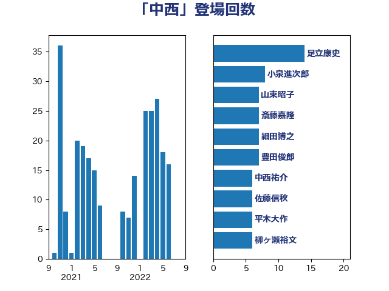

単語「中西」

| 足立康史 | 日本維新の会 | 14 回 |
| 小泉進次郎 | 自由民主党 | 8 回 |
| 山東昭子 | 自由民主党 | 7 回 |
| 斎藤嘉隆 | 立憲民主党 | 7 回 |
| 細田博之 | 自由民主党 | 7 回 |
| 豊田俊郎 | 自由民主党 | 7 回 |
| 中西祐介 | 自由民主党 | 6 回 |
| 佐藤信秋 | 自由民主党 | 6 回 |
| 平木大作 | 公明党 | 6 回 |
| 柳ヶ瀬裕文 | 日本維新の会 | 6 回 |
| 野田国義 | 立憲民主党 | 6 回 |
| 長峯誠 | 自由民主党 | 6 回 |
| 鶴保庸介 | 自由民主党 | 6 回 |
| 前川清成 | 日本維新の会 | 5 回 |
| 吉田忠智 | 立憲民主党 | 5 回 |
| 石橋通宏 | 立憲民主党 | 5 回 |
| 中西健治 | 自由民主党 | 4 回 |
| 松村祥史 | 自由民主党 | 4 回 |
| 矢倉克夫 | 公明党 | 4 回 |
| 西岡秀子 | 国民民主党 | 4 回 |
| 足立敏之 | 自由民主党 | 4 回 |
| 馬場雄基 | 立憲民主党 | 4 回 |
| 麻生太郎 | 自由民主党 | 4 回 |
| 山口俊一 | 自由民主党 | 3 回 |
| 秋野公造 | 公明党 | 3 回 |
| あべ俊子 | 自由民主党 | 2 回 |
| 上月良祐 | 自由民主党 | 2 回 |
| 下条みつ | 立憲民主党 | 2 回 |
| 伊藤渉 | 公明党 | 2 回 |
| 宮沢洋一 | 自由民主党 | 2 回 |
| 山本順三 | 自由民主党 | 2 回 |
| 山田宏 | 自由民主党 | 2 回 |
| 山谷えり子 | 自由民主党 | 2 回 |
| 新妻秀規 | 公明党 | 2 回 |
| 杉尾秀哉 | 立憲民主党 | 2 回 |
| 松下新平 | 自由民主党 | 2 回 |
| 森屋宏 | 自由民主党 | 2 回 |
| 森本真治 | 立憲民主党 | 2 回 |
| 沢田良 | 日本維新の会 | 2 回 |
| 渡辺猛之 | 自由民主党 | 2 回 |
| 滝沢求 | 自由民主党 | 2 回 |
| 茂木敏充 | 自由民主党 | 2 回 |
| 薗浦健太郎 | 自由民主党 | 2 回 |
| 西村智奈美 | 立憲民主党 | 2 回 |
| 西田昌司 | 自由民主党 | 2 回 |
| 赤木正幸 | 日本維新の会 | 2 回 |
| 越智隆雄 | 自由民主党 | 2 回 |
| 青木一彦 | 自由民主党 | 2 回 |
| 井上信治 | 自由民主党 | 1 回 |
| 井上哲士 | 日本共産党 | 1 回 |
| 吉田久美子 | 公明党 | 1 回 |
| 大岡敏孝 | 自由民主党 | 1 回 |
| 大野敬太郎 | 自由民主党 | 1 回 |
| 太田房江 | 自由民主党 | 1 回 |
| 山口壯 | 自由民主党 | 1 回 |
| 岸真紀子 | 立憲民主党 | 1 回 |
| 徳永エリ | 立憲民主党 | 1 回 |
| 海江田万里 | 立憲民主党 | 1 回 |
| 片山さつき | 自由民主党 | 1 回 |
| 田畑裕明 | 自由民主党 | 1 回 |
| 石井章 | 日本維新の会 | 1 回 |
| 福岡資麿 | 自由民主党 | 1 回 |
| 福島伸享 | 無所属 | 1 回 |
| 篠原豪 | 立憲民主党 | 1 回 |
| 若宮健嗣 | 自由民主党 | 1 回 |
| 若松謙維 | 公明党 | 1 回 |
| 菅義偉 | 自由民主党 | 1 回 |
| 萩生田光一 | 自由民主党 | 1 回 |
| 藤巻健太 | 日本維新の会 | 1 回 |
| 西村康稔 | 自由民主党 | 1 回 |
| 赤羽一嘉 | 公明党 | 1 回 |
| 野田佳彦 | 立憲民主党 | 1 回 |
| 鈴木俊一 | 自由民主党 | 1 回 |
| 鈴木宗男 | 日本維新の会 | 1 回 |
| 関芳弘 | 自由民主党 | 1 回 |
| 音喜多駿 | 日本維新の会 | 1 回 |
| 馬場成志 | 自由民主党 | 1 回 |